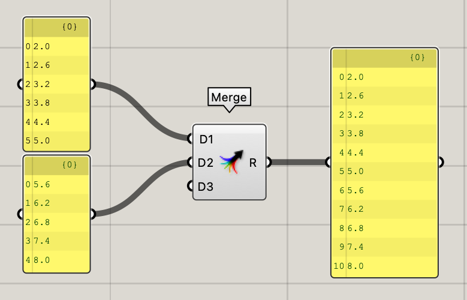
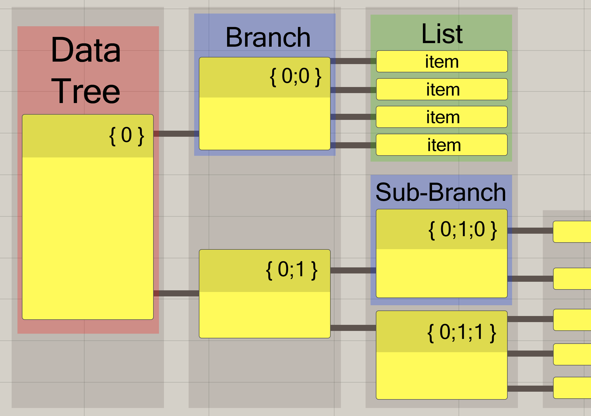
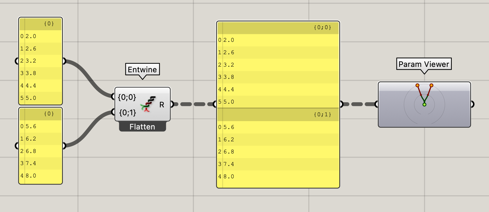
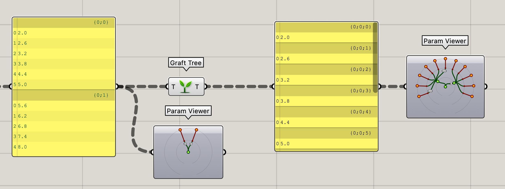
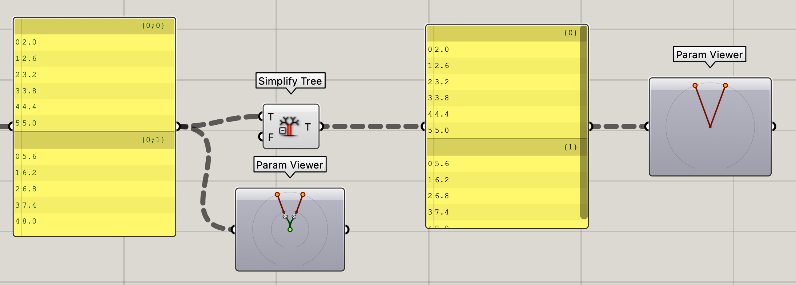
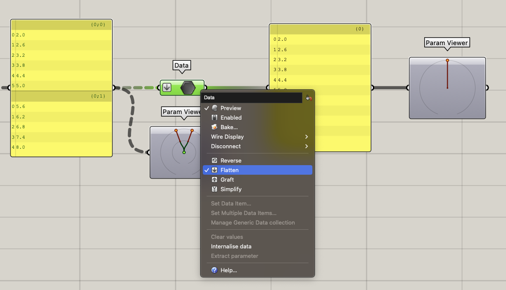
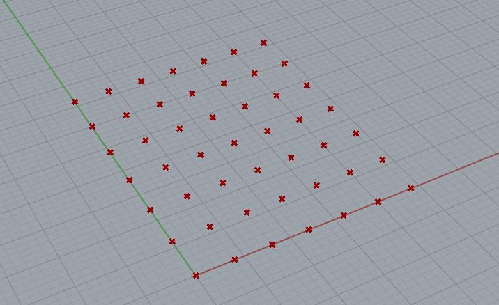
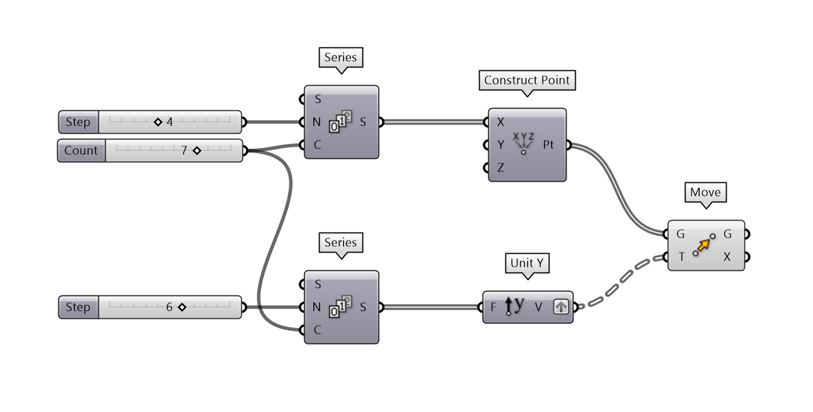

Lesson 3 - Data structures#
📌 Outlines: A short description of what you can expect in the upcoming section.
📑 Explanation text: Written explanations with supporting images.
👩🏫 Explanation videos: Explaining the course material in short lecture videos.
📺 Tutorial videos: Follow-along tutorials.
💡 Tips: Tips and tricks to make working in Rhino/Grasshopper easier.
🖱️ Exercises: Small practice questions. The solution is provided.
💻 Assignments: Open-ended assignments, to practice further with the course materials.
👩🏫 3.1 Introduction (2 min)#
📺 3.2 Combining lists (20 min)#
You can download the final file of this tutorial here:
📑 3.3 Datatrees and Grids (20 min)#
📑 3.3.1 Merging Lists#
In tutorial 3.2 we looked at combining two lists in a circle component. Lists in Grasshopper can also be combined into a single list using the [Merge] component. In the combined list, the items of List 1 are followed by the items of List 2. In the example below, this means that the item at index 0 in List 2 is now accessible under index 6 in the combined list, and so on. Now that you understand how to manipulate and combine lists, it is time to learn how to work with more complex data structures, called Data Trees.

📑 3.3.2 Data Trees#
Data Trees are an important concept in Grasshopper that allows you to manage, sort, and manipulate large amounts of data. At its most basic level, a Data Tree is a hierarchical organization of data in Grasshopper. A Data Tree is made up of branches, lists, and items. Each branch is a subset of data that may contain a list, an item, or even another branch. A data tree is defined by a numerical structure, such as {0,0,0}, where the amount of numbers within the brackets indicates the amount of depth of the data tree.

Using the two lists from the previous example, we can create a data tree by combining the lists with a [Entwine] component. As can be seen in the [Panel] component, a data tree with 2 branches has been created with each branch containing 1 list.
The data tree can also be visualized using the [Param Viewer] to retrieve more detail on the data structure (Right-click on the component and select “Draw Tree” from the options). The gray circular outlines represent the depth of the data tree. In the example below, the data tree has a depth of 2.
Additionally, You can notice that the new connection wires between components are displayed as a dashed line to represent a data tree is being connected (if the “Draw Fancy Wires” option is checked under “Display” in the top toolbar).

📑 3.3.3 Manipulating Data Trees#
To handle large amounts of data in Grasshopper, you will need to know how to manipulate data trees with basic functions such as flatten, graft, and simplify. First, let’s take a look using the [Flatten Tree] component on a data tree.
Flatten Tree#
The [Flatten Tree] component is used to remove the branch information or hierarchy from the data tree. Using this component converts the data tree into a list with all its items located within 1 branch. Since the branch information is deleted after a flatten operation, this component should only be used when the original data structure is not relevant for further operations in the script.

Graft#
The [Graft Tree] component adds extra depth to the data tree thus increasing its complexity. A new branch is created for every data tree item in an existing branch. In the example below, every item in the original data tree is converted into its own individual branch.

Simplify#
The [Simplify Tree] component simplifies the data tree by reducing the depth of the data tree to its minimal data structure while maintaining the branch information. In the example below, the data tree structure is reduced from a depth of 2 to a depth of 1.

Manipulating Data Trees (Alternative Method)#
The data tree operations shown in the examples above using the Flatten, Graft, and Simplify components can also be performed by right-clicking on the input or output of a node and selecting the Flatten, Graft, or Simplify options. The corresponding icon will also be displayed on the component to represent the data tree operation performed at the input or output.

🖱️ 3.3.4 Exercise: Build a grid#
Build a grid of points in the XY plane. There are multiple ways to achieve this result, but try to use a [Construct point] component and work with lists. If you get stuck, you can check the solution below.

Possible solution
